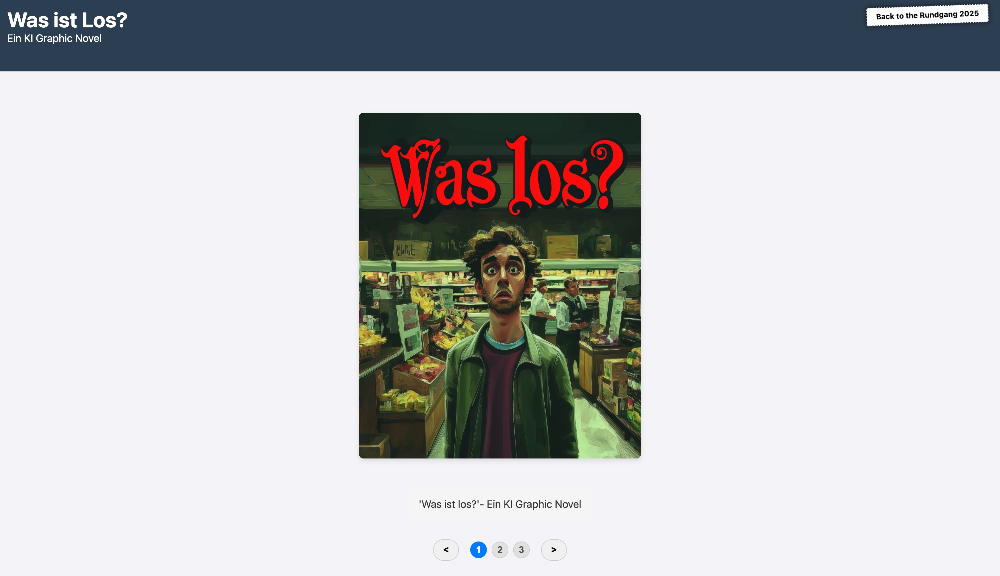

A Generative Graphic Novel
 Visit WebsiteA generated graphic novel created by using the AI image generator Midjourney. The story follows a man going after his normal daily tasks but suddenly feeling like something is wrong. Like he is being watched. He flees into a discounter but still sees aliens around him. When he finally arrives home he sees his reflection in the mirror, seeing that he is an alien himself. In the end he goes outside and comes to peace with himself, living together with the aliens in a better life.
This is a group project by Margarethe Schäfer, Ylva Fee, Liana Geonjyan and me.
From my perspective the cooperation in the group worked really well. Everyone had their own part they worked on and we expanded and added ideas in the group together.
The problems were primarily originating from our decision to use the Midjourney AI to generate the images. It was really hard to keep the pictures consistent in style and content. Generating text in the panels was even worse, so we decides to write the text under the panels on the website.
 Presentation
Presentation